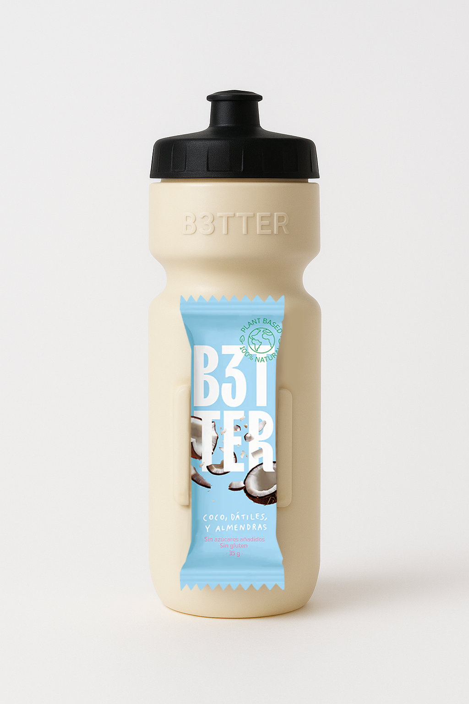
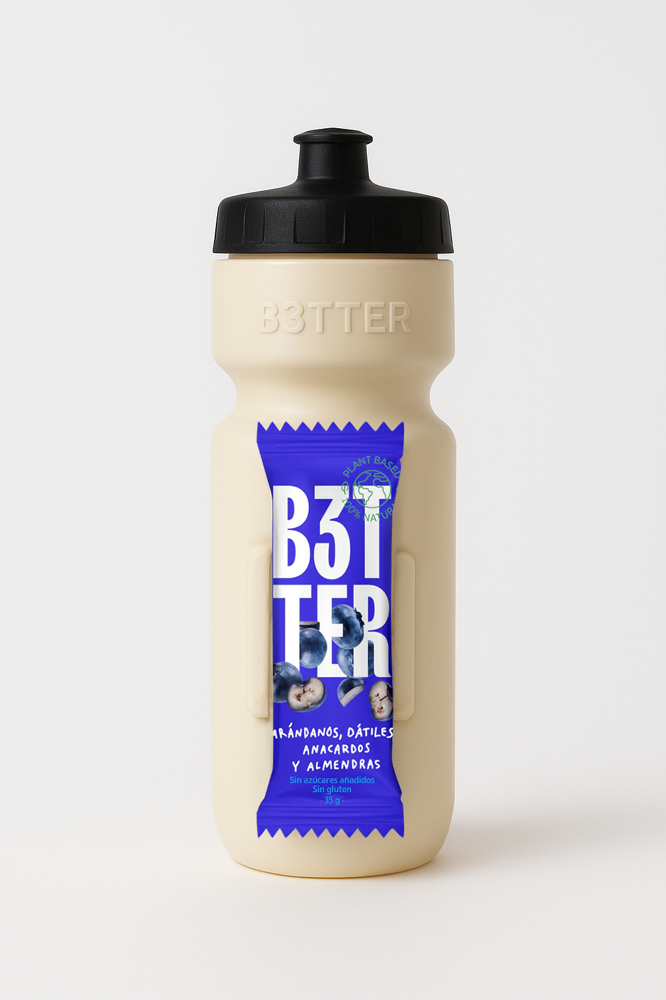

B3TTER
Creative Direction · Product Concept · AI · Photoshop · Branding
Propuesta desarrollada con IA y Photoshop de una botella con un accesorio integrado para sujetar una barrita energética de la marca Better Foods.
La idea nace de la identidad de la marca y de su vínculo con el deporte, uniendo hidratación y alimentación en un mismo objeto. Además de aportar funcionalidad, la botella aumenta la visibilidad de Better en cada uso y refuerza su posicionamiento como una marca innovadora dentro del lifestyle deportivo.

